こちらのページは現在日本語しか対応してません。ご不便おかけします。
こちらは現在制作中のDevLogになります。不定期で更新です 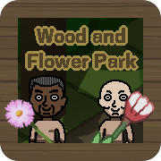
Wood and Flower Park今日はあまりやる気でませんでした ですので音楽を作ってました Xにアップしてみたら、192Kbpsの音質で圧縮になり黒板ひっかいた音みたいになりました 去年調べてくれた人によりますと おすすめは720 * 1280pxの9:16の縦型で mp3の128kbps以上は圧縮されるようです 動画は2000Kbps以下がよいようです 2026/11/10 今日はウインドウ下側の描画修正とアニメーションの修正と 音楽も作れたらなと思います ウインドウ下側はちょっとよくなりました。まだ修正が必要ですが 直さないかもしれません。案が思い浮かびませんので アニメーションを修正しました ４方向から２方向の下方修正です あまりアニメーション作ってて乗り気ではありませんでした というのも衣服がニットで夏は暑いかなと思ったんですが、 夏までにアプデすれば済む話しでした 最終的には６方向になると考えてます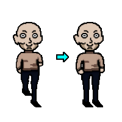
あと、YOUTUBE Shorts用に音楽を作ってます 時間の合間にちょっとずつ作る予定です 2026/11/09 今日は地味な雑草を投稿して、お昼寝しますかと思ってた所でしたけど びっくりする量の応援が届きました。 イイネ、返信、リツイートありがとうございます。感謝です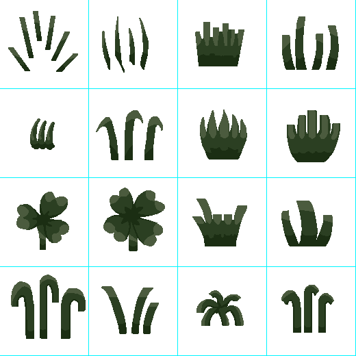
さて今日は、先ほど作った雑草をゲームに組みたかったんですが、 その前に木を種類別に描画して森を描いてみたいなと思ったんです ですが、簡単にとは行きませんでした AIとログ解析進めてたんですが、なかなか出てこないエラーログで解決に時間を要しました 単純に配列を900個作ってたんですが、それでは足りなかったようです 次に、ローディング方法の入れ替えをしました 今のプログラムは「asset.images.background」とアセット式にしてますが ちょっと長いなと思いまして、前回使った方法に戻すことにしました これも順調とは行きませんでした。GPTの力を借りて、何とか解決です 次にローディング方法を切り替えたら、入力が動かなくなってました もう涙が出てきそうな日です どうやら、ローディングに使ってた「key」という変数が keyboard入力でも使われてまして。。。 もう体力残ってないなか、無事解決です そして雑草を並べてみました 2026/11/08 寒くなってきましたね 暖房つけてますが、体すごく冷えます ヒートテックにフリース ヒートテックパンツ ネックウォーマー 手にはサポーターに穴あき手袋です さて、今日も雑草です。 近所の森に行ってみて、実際に雑草を見てきました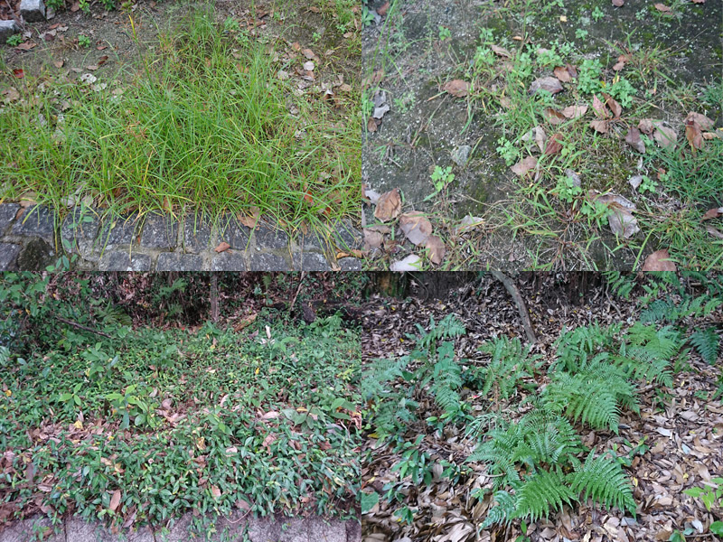
実物をみますと、描いてきたデザインの違いにハッとさせられます 普段雑草は見過ごしてしまうので、ゲームの現場の背景を描く人には感嘆させられます どのようにして背景に溶け込ませるものでしょうかと スマホで撮った資料を参考に、絵が伝わりやすいドット絵にしてます 雑草はゲームに何回も出てくる予定なので、しっかり描きたい所です 葉ものの雑草は、花に間違えやすいのでもしかしたら削除するかもしれません クローバーも時間かけて描いたのですが、削除予定です それから、YOUTUBE Shortsをやりたいなと思いました というのも、私YOUTUBEのフォロワーいませんからね Geminiによりますと、ゲーム開発者でしたら YOUTUBE動画は月1～2回、Shortsは週1でいいようで 自分にはできそうです YOUTUBEの動画は月1回になりますでしょうか GPTはショートを取り溜めて、毎日進捗報告がいいと 言ってましたが、私は多分ショート毎日は続かなさそうなんですね ですので、Gemini案を採用することにします。週末には動画だせるといいです 2026/11/07 昨日は雑草を描いてて、あまり進まなかったです 今日は最初にイメージイラストを描いてて感じたんですけど 枝を描いてて絵の楽しさを感じました また背景のブロックチェックに捉われず、好きなように黒で輪郭線描いてると 楽しさを改めて感じました 昨日はペンが進みませんでしたが、今日の絵はいいので ペンが進みます。苦手なものを描くのも良いのですが、寒くなってきましたし 個人的には定期的に好きなもの描いて、指を動かすことが大切だなあと実感です やばいです。配色のファイル上書きしちゃって。。。 別にファイル残ってました。セーフ。。。 そして4秒の動画作ろうとしてたんですけど、4分の動画作ってました 無理やり倍速倍速倍速かけまして、短縮しました ちょっとライティング変ですけど、妥協して投稿です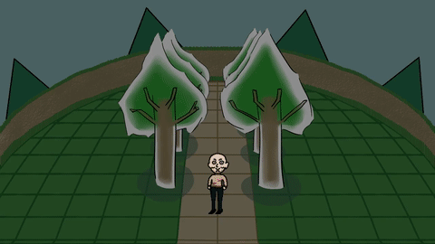
2026/11/06 雑草を描いてました。あまりうまく描けなかったので 明日もしてみたいと思います 2026/11/05 今日は自宅に換気扇取替してもらいましたので 作業少なめです 2Dイラストに方針が決まりましたので、順調に進むかと考えてます エクセルに花の色の種類と茎の背丈を記入 あとは寝てました 2026/11/04 エンジン開発11日目 今日は、線画と塗りつぶしを作りました それから、イラストアプリ背景の灰色とダークグレーのタイルを作りました WebGLは、大きなスプライト画像を何枚か読み込むとフレーム毎に読み込みの処理は不要で、そのまま描画できます さらにGPUで処理できる部分もあり、CPUとGPUの負荷調整できるようになります WebGL2.0ですと、描画回数は最短1回で済むかもしれません 私はWebGL1.0なので、背景を描画、オブジェクトの描画、切り貼りした画像ごとに描画 ですので、3回～5回を予定。もし動かなかったら描画をまとめてドローコール1回にします 3Dのドローコールと、画像のドローコールは今の所は別ですが、 画像のドローコールは、3Dのパラパラ漫画に主人公とNPCを一度に差し込む形になるので ドローコール回数はちょっと減ります 試しに、BlenderとWebGLでアサオガを描画しました。 そして3D酔いしました。。。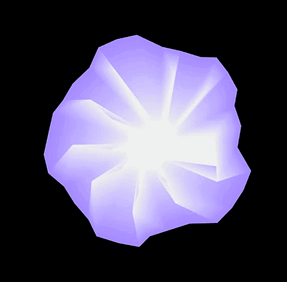
自分にもっと実力あればCanvasを最大限発揮できるWebGLで描画数やグラデーション、ライティングに 力を注ぎ込めたんですが、個人開発で沢山のお花と木の描画はできるのかと感じまして お花の形も複雑で、実際にポリゴン数も実際どこまで作ったらいいか分からなく、 遠近用も作らなくちゃいけなくて、さらにタイムラプスの成長を考えますと頂点座標は果たして作りきれるのかと 自問自答しました。 それで2Dイラストに変更しました。 もともとこのオブジェクト作成については迷ってたので、一度決まれば順調に行くのかなあという具合です 2026/11/03 エンジン開発10日目 ちょっと順調に進まないので、ボトルネックをまとめます 0.JSのコードに慣れているため、WebGLのコードに慣れない。目が回ってる状態です 1.WebGLはセキュリティー上、画像でローカルサーバーを立てる必要があります 2.文字の出力にはCanvasを2枚用意して、Canvasからの処理を変換する必要があります 3.カラーコードからRGBAに変わるために変換エンジンを用意してません 4.手探りの状態で、ほぼ同じWebGLを出力してはループししてます 5.自分の予想とかけ離れた描画になってます 対処案 0.最初は誰だってそうです 1.ローカルサーバー立てたくない時もございますので、画像を使わないシーンを別途作ってみます 2.これは優先順位低めです。後日してみます 3.カラーコードをRGBAに変えるエンジンを用意したい所です 4.ループしてもいい。しなくてもいい。深く考えることではないです 5.シンプルなドット調の描画でいいかと。黄緑や、目に優しいグリーンカラーの単色でぼかしは出力時のズレに違和感覚えるため削除です 改善案 カラーコードをRGBAに変えるエンジンを用意しようと思います ループが続くようなら一旦ストップしてみます。おそらくその状態は疲れていて、休憩でエネルギーの充電が必要な時でしょう JSとWebGLの組み合わせみます。配列や配色決めはJSでもいいかなと考えてますので WebGLを簡単に出力しないで計画順にして一度考えてみてから出力する方法にします （これは単に自分の実力不足で、出力時に毎回3D酔いするためです） 試験的な実践（技術テスト） 画像の処理を一通り覚えます 読み込み、配列処理、描画 スプライト 回転 3D出力の花にグラデーションとライティングを添えてみます GLlineと塗りつぶしを覚えます WebGL1.0の都合上。画像は8枚でスプライトで作って欲しいみたいですので グラフィクスシステムを変更してみようかなと 顔は４方向 * Animation 体は６方向 * Animation 今日やったことは、三角形を１つ。三角形を２つ書いてみました。 これから三角形を好きな個数書いて、色塗り塗りします 2026/11/02 エンジン改良9日目 Three.jsの3DWebGLエンジン（別名：ライブラリー、フレームワーク）の容量は600KB 最新のJSであれば、短く削れますが私の古いJSコードでは削れません 最初に仕様は決めてたのですが、GPUの自作エンジン作るのは簡単ではない作業です GPTに計算してもらった所、 機能 目安 WebGL初期化・シェーダー 2～5日 カメラ・行列 1～2週間 メッシュ描画 1週間 色・グラデーション 3～5日 線画表示 3～5日 オブジェクト管理 1週間 マウス・キーボード・ゲームパッド連携 3～5日 最適化・デバッグ 2～4週間 合計すると、2～3か月程度で実用レベルの基盤が見えてくると思います。 ただ、JSでCPU処理を進めたため WebGL描画基盤：1～2週間 シェーダー作成：1週間前後 グラデーション・ライティング調整：2～4週間 デバッグ・最適化：1～2週間 合計すると、約1～2か月で十分実用レベルに到達できる可能性があります。 およそ1か月の短縮になりますが、それでもなお1か月( ﾟдﾟ)ﾎﾟｶｰﾝと言った状況です 600KBを取るか、10KBのために1か月取るかという選択です ただ600KBは自分にとってとても大きいので後者になりますでしょうか とりあえず5日で簡易的なエンジンを作ってみて、 1か月をゆっくり制作と同時進行できたらなと考えてます 無理と判断したらThree.JSに移行します 2026/11/01 エンジン改良8日目 Blenderを触ります。使い方を半分忘れてますが、進めます 余談ですが、AIなかったらBlenderを触ってなかったと思います 昨日は目が痛かったのですが、原因わかりました。目に前髪が刺さってたからです ということで前髪を切りました それから、Blender + WebGL1.0 + LegacyJS + Canvasで、出力してみました なんとか配列出力、CPUからGPU処理変換、CanvasにGPUを描画できました GPUはJSで3Dライブラリーで有名なThree.jsを使いたい所ですが、迷う所です 今回、テクスチャーや、ぼかし、影の機能を使わない予定で WebGLのエンジンを自作しますと 軽量できれいなグラデーションやライティングを描画できるようになるんですね 2026/10/31 エンジン改良7日目 今日は朝からずぶ濡れの中買い物に行って、折り畳み傘は壊れ散々でした 靴とかばんを乾かしました そこでエネルギーを奪われたからか、今日は集中力なく作業は進みませんでした そしてXに久しぶりのポストはとても楽しかったです。素敵なハッシュタグ企画をありがとうございます クリエーターや開発者をはじめ、いろんな人と交流できました 今日はWebGLの描画までの処理をちょっと調べて終わりです なぜか目がちょっと痛いんです。ゆっくり休もうと思います 2026/10/30 エンジンの改良6日目 さて本日もゲームエンジンです 調べますと最新のJSプログラムでソートはうまくいくのですが、 幅広いデバイスに届けるために古めのLegacyJSでプログラミングしてるんですね ソートプログラムは同じ座標ですと、ナンバーがフレーム毎にズレるようなので、 ソートエンジンを作りました。 ヌルヌルがなくなりました。 座標変換は、Canvasの設定を修正することでうまくいきました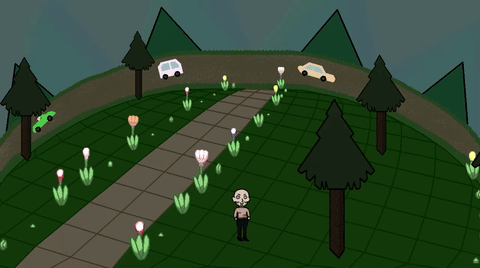
2026/10/29 エンジンの改良5日目 今日も車をちょっと色塗りまして 本日もゲームエンジンです 描画順かよくわからないですが、描画が変なんですね ヌルヌルしててちょっと作っててイヤな感じです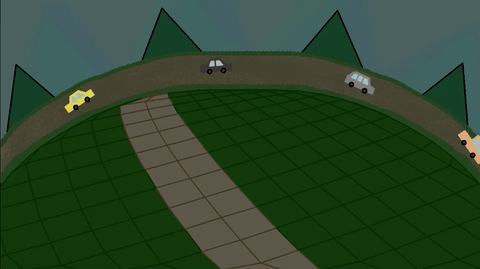
座標変換はちょっとずつよくなってきましたが、まだ完成まで遠そうです 2026/10/28 エンジンの改良4日目 サウンドエンジンの採点 私なら 97～98点 を付けます。 項目 点数 設計 100 可読性 98 軽さ 99 保守性 97 再利用性 98 総合：98点 エンジンは「80点から100点」にするのに時間がかかりますが、 ゲームはエンジンが95点を超えていれば十分に良いものが作れます。 こ、こ、こういう大切な所はもうちょっと先に言ってくれませんか？ その後、サウンドエンジンを修正して、入力する部分のコードを短くしました 私なら99点を付けます。 さらに点数伸びました。 あとは、バグ防止のコードを入れるか否かのさじ加減のようです コード軽くしたいんで、つ、つかいません それからちょっと車を塗って、ゲームを動かす部分のゲームエンジンを触りました 試したこと： 再生処理を選択式にしてみたこと 再生処理をプッシュ式にして、再生待機キューを取り入れること プッシュとは別に、サウンドループを作ることで、まとめて処理しやすくなり、再生を実行できること 入力を簡単に。playse(0)で数字を入れるだけで再生するように変更しました ローディングの採点 結論から言うと、このローディング方式はかなり好きです。95～97点くらいです。 総合評価 私なら - 設計：100点 - 可読性：98点 - 拡張性：98点 - 互換性：100点（Legacy JSを意識している点が良い） - ロード管理：95点 総合：97点 ロードの甘い所は、 フレーム毎にローダーが走って重くなる可能性がある アセットをまとめれる 今回はアセット少ないので、上記を解決して先に進めます 評価を気になってますので、 点数ではゲームそのものを計れないような気もしますけど 2026/10/27 エンジンの改良3日目 高速ロード →ゲームスタート → 追加ロード →描画とサウンド追加 実装 トップロゴの87.1 KBは3G回線ですと、20秒くらいかかります 現状ロゴはもっとシンプルにしてみてもいいかもしれません サウンドエンジンを２つ作りました １つ目は同時に鳴らせないシンプルなもの ２つ目は同時に複数鳴らせるもの GPTによると１つ目の評価は、 私なら 85～90点 を付けます。 だそうです 2つ目も採点してもらいました もし私が点数を付けるなら、 1つ目（select方式）：95点 2つ目（フラグ配列方式）：88点 えっ。１つ目の点数上がってますけど？ それでちょっと１つ目を変更しまして、 総合評価 私はこの設計、かなり好きです。 設計：98点 可読性：95点 軽さ：98点 拡張性：98点 のようです 今日は久しぶりに8時間近く長く寝ましたが、睡眠の質よかったのでいつもより集中してました 2026/10/26 エンジンの改良2日目 ゲームエンジン作りたい思いから、進めます 今まではロード終えた後にAnyPressKeyでトップ画面に推移してましたが、 高速ロード → ゲームスタート → 追加ロード → 描画とサウンド追加 という形を試してます。 上の形式とは別に作れたらいいなと考えていますのは、 まずトップ画面、主人公の顔と服装と1SEをロードします 高速ロード → ゲームスタート → 追加ロード（UIと主人公の近くのOBJとNPCと頻出SE） → 描画とSE追加 → BGMロード ↑BGMじょじょに大きく追加再生 → ボイスロード ↑ボイスをじょじょに追加再生 その後に → 追加ロード（主人公の遠くのOBJとNPCと他SE） → 描画とSE追加 です。 今回のゲームでは使いませんが PressAnyKey後（ブラウザゲームの場合）に、トップ画面で映像や音楽をストリーミングしながらゲームスタートもよさそうです サウンドエンジンもちょっと見直してます 前作の間に合わせの急ぎで作ったコードですが、次の方法はUnity、UE4でも採用されてるようです soundf[i] = 0;は無反応。1は再生。サウンドエンジンで1を確認後2に移動してループ再生を防いでます ただ、true, false方式でもいいのかなあと なんてことできますから。書くコード短くなってよいです 今日は台風と気圧のせいか、寒さからかあまり作業は進みませんでした 2026/10/25 エンジンの改良1日目 今日は休んだ。久しぶりにすごく休んだ感じします ツイッターとRedditを見てました それから高速起動を学んでました タイトル画像、描画軽減で数字 + %ローディング描画、主人公の服装とスプライトシート1枚、効果音の 高速ロードでトップ画面とどのタイミングでもAnypresskeyを押されたらタイトル画像はUIに変わりゲームスタート 主人公の周りをロードしながらBGMと描画追加 * 5 の繰り返し予定です 2026/10/24 配色の変更 いろいろパラメータを弄って楽しかった 配色のお勉強をいろいろしました 具体的にはというと、明度３５パーと７０パーで色の見え方は変わるということです それからお勉強したことを活かしました 白から黒の彩度を一度灰色近くまで落として、上げる 色相については、全体のバランスを見つつ合わせました キャラクターと、マス目（グリッド）以外の輪郭線を大きく調整しました このメリットは多くあり、 作業の負担が減ることと、処理が軽くなり他に回せること、ナチュラルなグラフィックスになることです いずれ斧で木こりや、カマでお花摘みを考えてると、輪郭線は不要と判断しました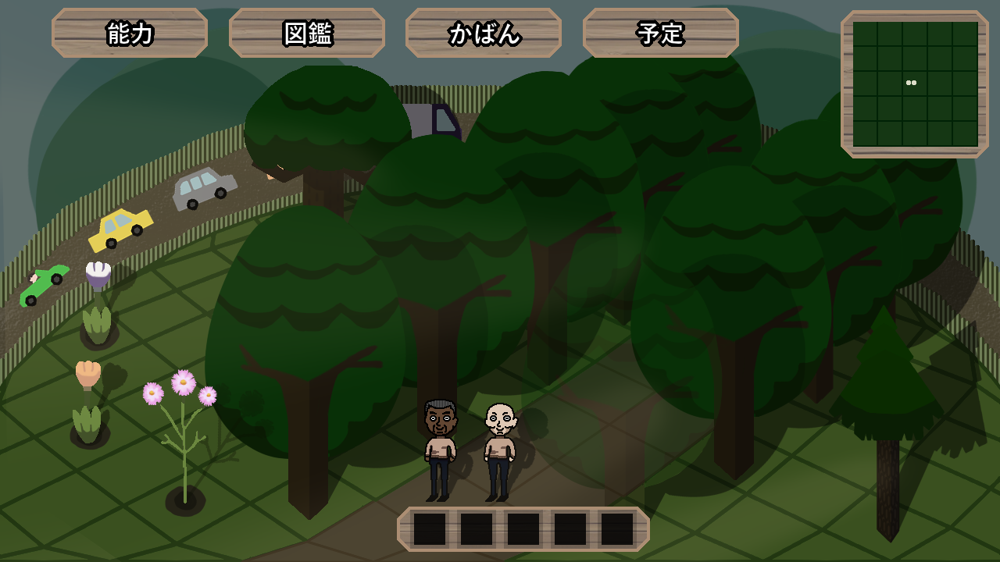
2026/10/24 花と木のオブジェクトの追加 今回は花と木をできるだけタイムラプスアニメーションを書きたいので、 かたまった時間の確保が必要かと それと今Xで作業進捗を報告しつつ、作業するという器用さ欲しいですけどなかなか難しいです 現在のプラン 月：作業予定の発表 水：進捗内容とスクリーンショット 金：週１でGIFアニメ ただあまりうまくいってないです。 もうちょっと自分に腕があったり、ゲームエンジンをしっかり作れてたら アニメーションや、オブジェクトの報告を定期的にできそうですが、 私はゲームデザインに興味があって、そこを大切にしすぎてるのでポストする内容が地味になってます 本音としましては、もうちょっと何本かリリースを出してみたいので 制作していたいという思いが強く出てるのかもしれません 修正のプラン1 月：開発者を和ます雑談 水：開発者に居心地のいい雑談 金：GIFアニメ公開 これならできそうです。ネタを思いつくかどうかですね 修正プラン2 月：なし 水：なし 金：GIFアニメ公開 これもいいのかな。ただこれですと、貴重な交流チャンスを逃す感じはありますね 2026/10/23 配色についてのお勉強。色を調べますと、ちょっと鮮やかな色みたいです シンプルに彩度を落とす。隣の色とのギャップで配色映えするように調整するとよさそうです 色を明るくしたり、暗くすると色の見え方が変わる。その時は色相を変えてみます これは影やライティングには特に使えますね 2026/10/22 UI2日目 ちょっと作業ゆっくりですが、今週は負担軽めに過ごしたいのでこれでよいと考えてます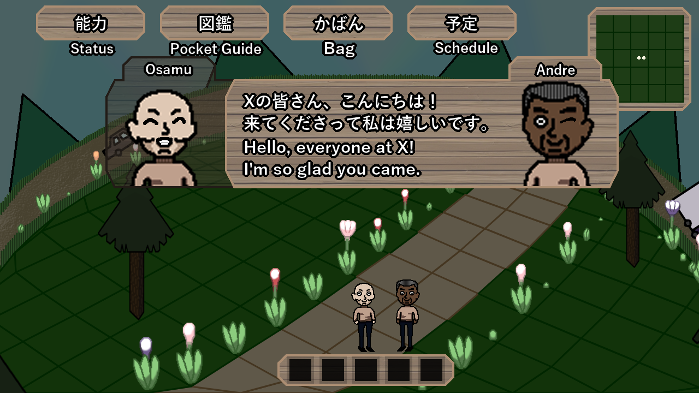
2026/10/21 UIの制作開始 サプリを変えたためか、作業があまり進んでません 2026/10/20 森の配色 パレットを作る ワールド座標が変化されない不具合 チューリップの描画順の不具合 これはソートの問題なのかも 2026/10/19 キャラを中心に回転しなかった問題を解決 こんな感じで箱庭内をぐるぐる動くゲームです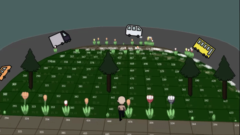
2026/10/18 主人公のイラスト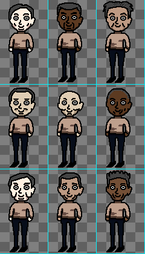
2026/10/08 BBQ Test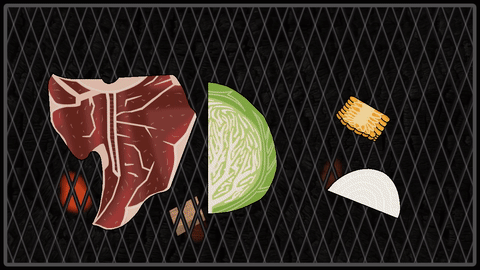
2026/10/07 制作開始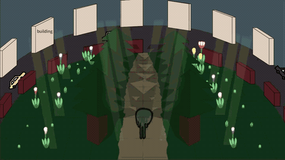
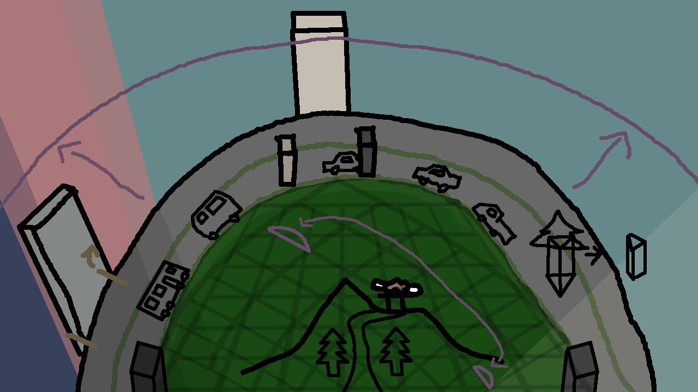
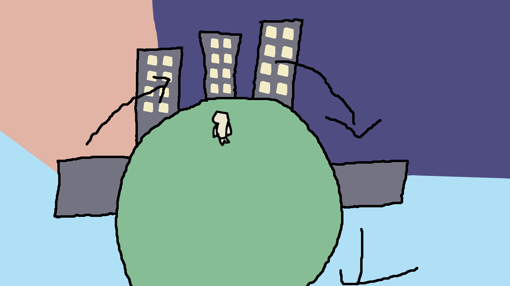
2026/10/04
Home